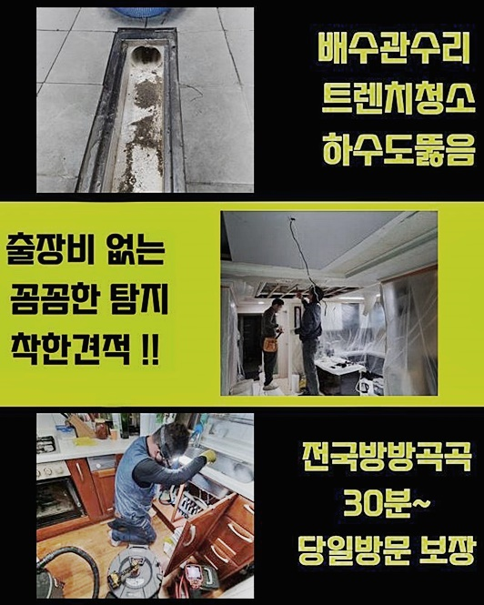
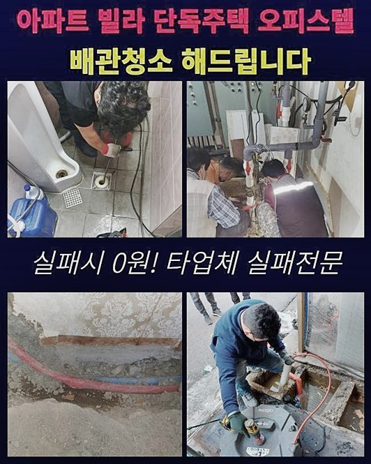
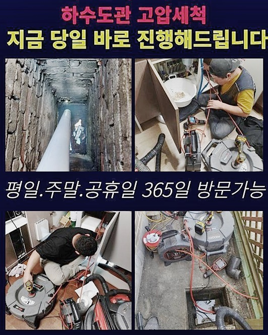
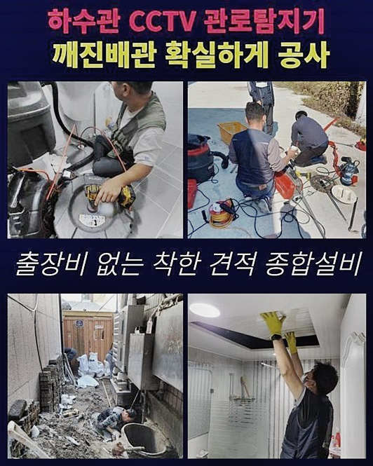
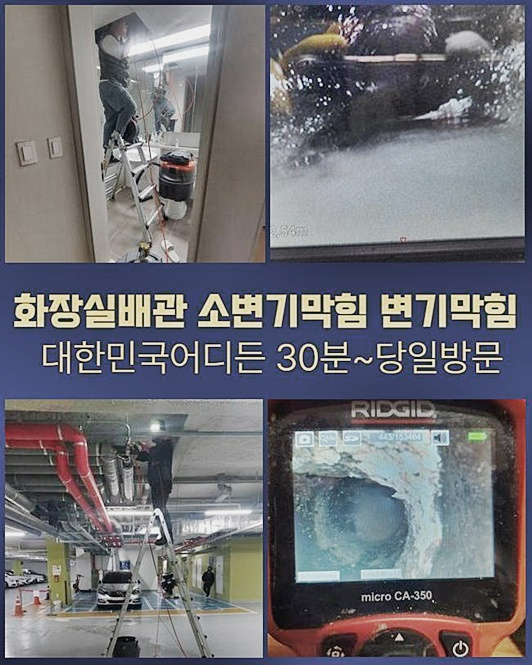
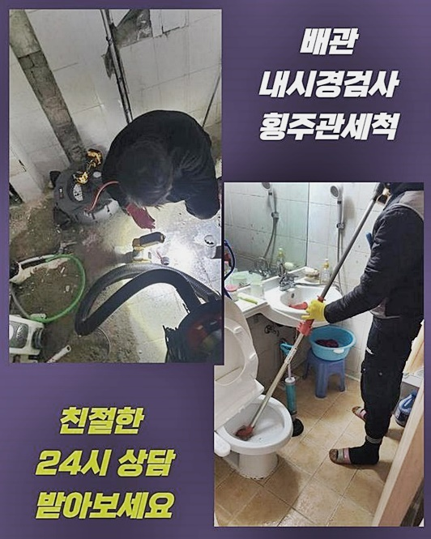

🏠 서탄면화장실뚫음 지산동 배수로뚫기 누수공사
용인 하수구막힘 전문 시공 후기

📋 작업 개요
- 위치: 용인
- 서비스 유형: 하수구막힘, 배관막힘, 누수수리, 역류해결, 뚫는업체, 배관청소, 고압세척, 설비공사, 악취차단
- 작업 일시: 2024. 7. 15. 20:12
- 업체명: 하수구수사대 (010-5615-2118)
🔍 문제 상황
서탄면화장실뚫음 지산동 배수로뚫기 누수공사
기간이 촉박한 사건일 경우에도 유예기간을 두지 않고 속히 물의 통로를 확보해 드리려는 생각을 갖고 일합니다!
여러 도구와 스킬이 든든하게 완비되어 있으므로 원활하게 대응해서 오류를 다잡아 드렸는데요
빠른 상담을 요청주셔서 제대로 조정할 수 있었으며 작업 완료 직후에 기능을 재기할 수 있게 됐어요
현황을 분석했더니 당장 역행 상황까지는 일어나지는 않았지만 보일러의 오류로 인해서 심각한 상황까지도 생겨날 수 있었던 조건에 처해 있던 곳이었습니다
막힘사태를 눈치채자마자 저희측과 연락이 닿아서 행운이라고 말하셨는데 내버려두는 시간이 장기화됐다면 추가 공사가 이뤄져야 할 수도 있었죠
약점은 빠짐없이 모조리 수습하는 것이 더 나빠진 조건까지 가는 걸 막아설 수 있습니다
물길이 막힌 듯 하다고 요청하셔서 빠르게 검토하고 봉인된 타겟을 해소해 드렸던 시공 장소였어요!
다른 시설물까지의 침범이 빚어지기 전에 스피드있고 무결점으로 고칠 수 있게끔 여러번 중간점검을 거치면서 지원을 해드리고 있습니다
한밤 중이지만 고객님이 전화주셔서 감사했기에 설비 전문업체로서 시간에 따른 호불호 없이 맞춤형으로 도와드리는 건 기본적 의무라고 봅니다
접수 즉시 재빠른 활동으로 완수를 도모하며 다양한 도구를 현장에 가져가니 어디 쪽에 막힘이 생겼건 개선해 드릴 수 있습니다
간과하고 놔둔다면 문제는 일단 덮인 듯 보여도 오랫동안 고정된다면 개선하기 힘든 일로 이어져서 터질 수 있습니다

🔎 원인 분석
💡 전문가 진단: 정밀 진단 장비를 사용하여 슬러지의 고착 여부를 판명하고 타격/세척 작업을 실시했습니다.
시간이 해결해 주기 바란다면 물을 다량 흘러보내면 구멍이 날까 기대하시겠지만 생각만큼 단순하지는 않습니다
배관 전용 카메라를 활용하여 정확한 오류의 원인을 밝혀내고 적절한 방책을 선정하여 효율적으로 해당 난제를 손봐드립니다
게다가 다채로운 익힘도를 통하여 총체적인 진단과 합리적인 해결책을 적용해서 만족할만한 완수도를 내 드리고 있어요
물의 통로가 형성된다면 내시경장치를 깊숙히 넣어서 어떤 덩어리가 자리하고 있는지 분석하는 단계에 돌입했죠
카메라는 좁다란 배수로의 모든 면을 찍어주는 카메라와 조명시설이 동반된 형태입니다
촬영을 하면서 내부 노폐물의 유형이나 오류가 생겨버린 구역을 구체적으로 발견할 수 있게 됩니다
피부 각질이나 머리카락 등이 뒤섞여 있었기에 구석구석을 닦아냈습니다!
의뢰주신 분도 저희와 함께 스크린을 보시면서 배관 실황을 체험하시게끔 해드렸는데 머리카락 뭉치가 이정도로 많다고는 생각못했다 하셨어요
카메라를 속으로 유입시켜서 몇 퍼센트 진행됐나보며 꼼꼼히 임무를 도맡아 드리지 못할 경우에는 같은 문제로 고생하셔야 해요
하수관 안의 장애물은 장시간 두면 바위처럼 굳어지므로 조치가 더욱 난감해 질 수 있어요!
홀로 처리하는 것만으로는 올바른 통로 복구를 갖지는 못하기 때문에 전면적인 하수도 청소를 초기에 받는 것을 권장드려요
오늘 소개할 장소는 대규모의 아파트로 딱봐도 낡아보였었고 여러 세대가 한데 모여 사는 구조였습니다

🔧 작업 과정
이런 구조물이라면 하수구의 사용량이 많기때문에 하수처리 시설의 오류가 나타날 가망성이 높아요
고여있는 물이 쾌속으로 흘러가지 못하면 배관 내부에 어떠한 결핍이 탄생하게 될지도 모르니 경계해야 하는 부분입니다
상황전반을 파악하고 적합한 해결책이 도입된다면 건물에 치명적인 손실이 생성되는 미연의 상황을 앞서 저지할 수 있는 겁니다
하수구에 이물질이 쭉 쌓이다보면 자극을 받아 파손되어 누수마저 나타나 버릴 수 있고 이는 건물 자체의 건강에 부정적 결과를 야기해서 광범위한 공사로 귀결됩니다
작은 물질만 발견됐다해도 고정된 채 세월이 흘러가 버리면 더욱 강도높게 형성돼서 세척작업을 오래해야 하는 상황으로 치달을 수 있기에 빠른 조치가 생명입니다
청소 과정에서 이물질이 있다는 걸 인식한다면 회전하는 샤프트를 통해 남김없이 처단하는 것이 제일 변화가 극적이예요
관로에 카메라를 넣고 세정한 내부 구조를 다시금 살펴보고 노폐물을 근절하는 세심함이 필요해요!
약간의 찌꺼기라도 재정비를 진행함으로써 재차 결함이 생겨나는 요소를 차단하는 겁니다
세정에 대한 요구가 있다면 간간히 내부 상황을 체크해가며 관로 속을 티끌 하나 없이 유지하는 세심함이 필요해요!
이번에 활용한 샤프트는 노폐물을 처리하는 데 맞춤 툴이라고 보면 됩니다
긴 호스의 끝부분의 체인이 원활하게 움직이며 벽면을 따라 들러붙은 오염물질을 분해해 줍니다
다시 한 번 알려드리자면 하수를 이용하면서 작은 입자들이 파이프로 진입된다면 날이갈수록 불순물들끼리 뭉쳐서 계속 누적되어 버립니다
막힘건이 오래 처리가 안되면 다수의 인력과 자본이 요구될 수가 있어요!
견고함이 있는 배관 자재라도 시간이 경과할수록 오염도가 심해지므로 하수구가 고장나는 문제를 낳을 지도 모릅니다
오래된 배관이 깔려있을수록 노폐물의 양도 상당할 것이니 물이 폐기되는 유동성을 차단할 수 있으며 냄새유발에다 크기가 커져 아예 길목을 폐쇄하기에 이르러요
설비에 대해 정기진단을 받고 세정작업도 거쳐가야 하며 아예 망가지지 않도록 신규 배관에 비해서 더욱 노력을 기울여야 해요
하수구 구멍을 통해서 기름기가 뭉친 슬러지같은 오염물질이 역류하기도 하니 이러한 사고를 막기 위해서는 하수구의 정규 청소업무를 해주는 과정에 중점을 두어야 합니다
만약에 이물질이 넓은 영역에 덕지덕지 붙어있다면 고압세척의 물줄기의 힘으로 시원하게 청소해 내는 것이 명쾌한 방식입니다
다급한 마음에 셀프처리하기 보다는 초반부부터 숙련공의 지원을 통해서 명확하게 막힘 사건의 기저를 판단하여 말끔한 해소방법을 취하는 절차를 통과해야 합니다
설비에 대한 상식이 전무한 상황이라면 무계획적으로 뚫어주는 활동보다는 전문가가 출동하기 전까지 대기하시는 편이 나을 겁니다


✅ 작업 완료
괜히 손상부를 자극시킨다면 배관이 부러지거나 누수가 생기는 등 많은 시공비용이 투자되어야 하는 보완공사가 절실해 지는 경우도 많이 봅니다
철두철미한 작업 진행과 미관과 기능의 원상복구로 하수관로를 고쳐드리고 문제없이 완수되었는지 다시금 관측하여 안정성을 확보해요
항상 다양한 도구를 현장에 가져가니서 고객님의 문제를 재빨리 고쳐드리고자 전력을 다하여 업무합니다
옥외 시설도 수습하는 대형장비까지 보유하고 있기 때문에 이물질이 어떤 성질이라도 복원해 드릴 수 있어요!
물이 고여만가는 난감한 상황이 나타난다면 시간 구애없이 조치해달라 말만 해주시면 장치와 기술의 협응을 통해 하수시설을 정비해 드리겠습니다!



⚠️ 베란다 누수 및 방수 관리 방법
- ✅ 비가 많이 올 때 창틀 주변이나 아래층 천장에 얼룩이 생기는지 정기적으로 확인해 보세요.
- ✅ 우수관 주변 실리콘 마감이 들뜨거나 깨진 틈새가 있는지 손상 여부를 수시로 체크하세요.
- ✅ 베란다 바닥 타일의 줄눈(메지)이 소실되면 그 틈으로 물이 침투하여 누수가 유발됩니다.
- ✅ 누수 의심 증상 발견 시 방치하면 아래층 손실이 커지므로 즉시 전문가의 진단을 받으십시오.
💡 핵심 정리
- 확실한 장비 작업(내시경 점검 및 샤프트 스케일링)으로 원인을 뿌리 뽑습니다.
- 작업 후 1년 이내에 동일한 부위 재발 시 100% 무상 A/S 서비스를 보장합니다.
- 서울 · 경기 · 인천 전 지역에 24시간 언제든 긴급 출동할 수 있도록 항시 대기 중입니다.
❓ 자주 묻는 질문 (FAQ)
🚨 용인 하수구막힘 문제로 고민이신가요?
정확한 원인 진단과 확실한 시공으로 재발 없는 해결을 약속드립니다.
24시간 긴급 출동 | 서울 · 경기 · 인천 전지역 | 1년 내 재발 시 무상 A/S